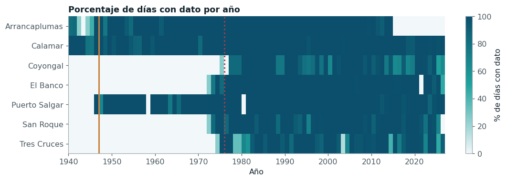
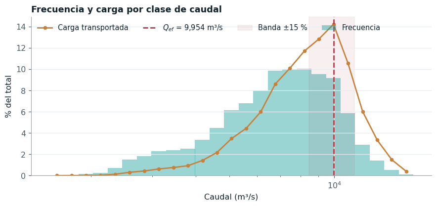
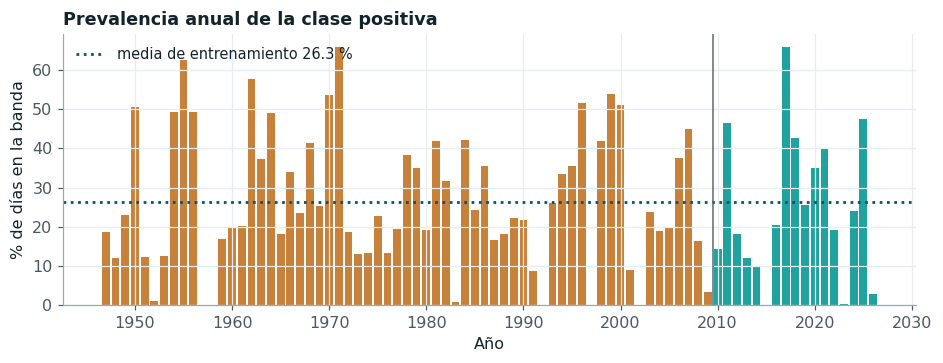
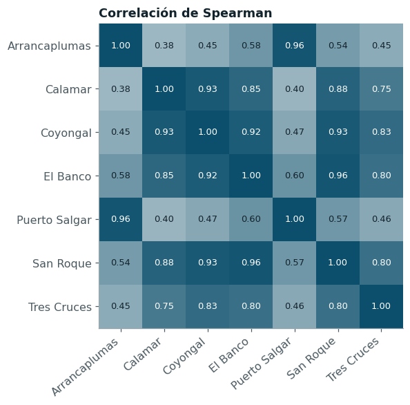
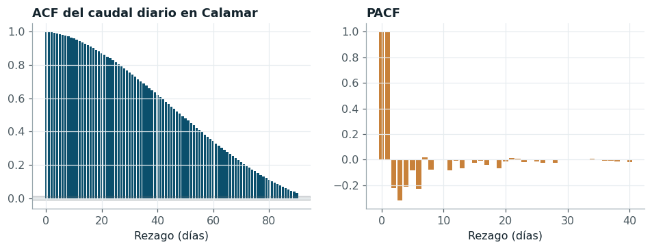
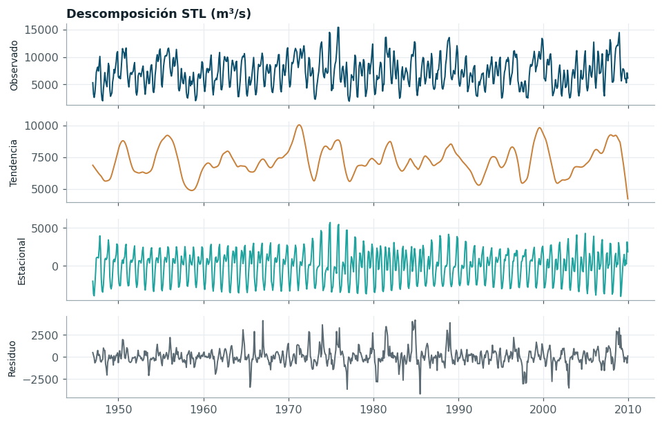
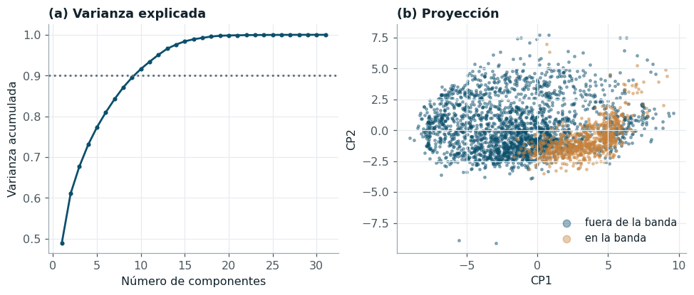

Datos: ETL y análisis exploratorio#
Este capítulo reconstruye el ETL del Entregable 1 como un módulo reproducible
(src/etl.py, src/features.py) e incorpora las tres correcciones solicitadas: el periodo
de modelado comienza cuando toda la red de estaciones está instalada, los intervalos de
confianza se obtienen con bootstrap por bloques y el parámetro de regularización del modelo
base se ajusta por validación cruzada cronológica. El análisis exploratorio se amplía con el
estudio del mecanismo de los faltantes que subsisten tras el recorte, la deriva entre
periodos y la sensibilidad del desempeño a la estrategia de imputación.
Fuente, estructura y ETL#
Los datos provienen del portal DHIME del IDEAM [IDEAM, 2026] y corresponden a series de caudal medio diario y de transporte medio diario de sedimentos en suspensión de siete estaciones del cauce principal del Magdalena. La unidad de observación es el día en una estación; el conjunto es un panel temporal corto en entidades (siete) y largo en tiempo, de modo que su tamaño efectivo depende sobre todo de la autocorrelación y no del número de filas. La licencia del portal autoriza la descarga para uso personal y no comercial, por lo que el repositorio documenta el procedimiento de descarga y no redistribuye los archivos originales.
| Estación | Inicio | Fin | Faltantes 1940-2026 (%) | Faltantes desde 1947 (%) | Faltantes desde 1976 (%) | Media (m³/s) | Asimetría | |
|---|---|---|---|---|---|---|---|---|
| 0 | Arrancaplumas | 1940-07-23 | 2014-12-31 | 18.3 | 15.6 | 23.4 | 1298 | 1.27 |
| 1 | Calamar | 1940-07-23 | 2026-09-24 | 1.6 | 1.2 | 0.5 | 7221 | 0.27 |
| 2 | Coyongal | 1975-03-01 | 2026-09-04 | 47.9 | 43.7 | 11.9 | 4988 | -0.05 |
| 3 | El Banco | 1972-10-01 | 2026-09-24 | 39.6 | 34.7 | 3.0 | 4117 | 0.55 |
| 4 | Puerto Salgar | 1946-01-01 | 2026-09-24 | 9.8 | 3.8 | 2.5 | 1582 | 1.20 |
| 5 | San Roque | 1972-10-01 | 2025-09-13 | 40.4 | 35.6 | 4.9 | 498 | 0.69 |
| 6 | Tres Cruces | 1974-10-01 | 2026-08-31 | 46.7 | 42.3 | 11.9 | 2330 | 0.22 |
El ETL lee los catorce archivos, corrige la marca de orden de bytes y los metadatos repetidos en cada fila, unifica los nombres de las estaciones y construye una tabla ancha sobre el calendario diario de Calamar, con 31.475 días entre 1940 y 2026. Los días sin registro quedan como valores faltantes explícitos; ninguna serie se rellena en esta etapa.
Corrección 1: periodo de modelado y mecanismo de los faltantes#
La retroalimentación del Entregable 1 señaló que la imputación por mediana de estaciones que aún no existían carecía de justificación. La observación es correcta y su alcance era mayor de lo que el informe original reconocía: entre el 40 % y el 48 % de los valores de El Banco, San Roque, Tres Cruces y Coyongal eran medianas asignadas a años anteriores a su instalación. Ese faltante no es aleatorio en ningún sentido útil, porque depende de forma determinista de la fecha, y la mediana impuesta convertía cuatro predictores en constantes durante tres décadas del entrenamiento, mientras la prueba (2010-2026) se evaluaba con valores reales.

Figura 1 Cobertura anual del registro por estación. El bloque vacío anterior a 1972-1975 corresponde a estaciones aún no instaladas. La línea continua marca el inicio del diseño adoptado (1947) y la punteada, el del diseño alternativo con la red completa (1976).#
Había dos formas de eliminar la imputación de estaciones inexistentes, y ambas se evaluaron. La primera conserva las seis estaciones y recorta el periodo de modelado a 1976, cuando la última estación de la red (Coyongal, marzo de 1975) acumula un año de registro. La segunda conserva el periodo largo y restringe los predictores a las estaciones que existen durante todo él: Calamar, la estación objetivo, y Puerto Salgar, con registro desde 1946, de modo que el modelado empieza el 1 de enero de 1947. La guía del curso fija además un mínimo de 20.000 observaciones. La tabla siguiente compara los tres diseños (el del Entregable 1 y las dos alternativas) con los mismos modelos de referencia evaluados en la prueba reservada.
| observaciones | entrenamiento | prueba | predictores | faltantes en predictores de estaciones (%) | ≥ 20.000 | PR-AUC XGBoost | PR-AUC logística | |
|---|---|---|---|---|---|---|---|---|
| diseño | ||||||||
| Entregable 1: seis estaciones desde 1940, imputadas | 30741 | 24765 | 5946 | 43 | 42.901 | sí | 0.940 | 0.875 |
| Alternativa: seis estaciones desde 1976 | 18359 | 12383 | 5946 | 43 | 5.845 | no | 0.919 | 0.882 |
| Adoptado: Calamar y Puerto Salgar desde 1947 | 28588 | 22612 | 5946 | 31 | 4.708 | sí | 0.941 | 0.880 |
El recorte a 1976 resuelve la imputación pero deja 18.359 observaciones, por debajo del mínimo de la guía. El diseño adoptado cumple ambas exigencias: no imputa ninguna estación en años en que no existía y dispone de 28.588 observaciones. La comparación empírica lo respalda. Con XGBoost, la PR-AUC en la prueba es 0,941 con Calamar y Puerto Salgar desde 1947, frente a 0,919 con las seis estaciones desde 1976 y 0,940 con el diseño del Entregable 1; con la regresión logística, menos sensible al tamaño de la muestra, los tres valores (0,880, 0,882 y 0,875) difieren en menos de una centésima. En conjunto, los resultados indican que la ventaja del modelo no lineal proviene de los treinta años adicionales de registro, que abarcan más ciclos de El Niño y La Niña, y no las estaciones del bajo Magdalena. El diseño del Entregable 1 alcanzaba casi el mismo desempeño que el adoptado porque también usaba el periodo largo, pero lo hacía alimentando cuatro predictores con medianas durante tres décadas; el diseño adoptado obtiene el mismo resultado sin esa imputación. La información anticipada de las estaciones del bajo Magdalena está en buena parte contenida en el estado reciente de Calamar: la más informativa, Coyongal, tiene un tiempo de tránsito de siete días, inferior al horizonte de predicción. Las seis estaciones no se descartan del proyecto: intervienen en las tres tareas adicionales con las que se evalúa el modelo original (capítulo 6), que empiezan en 1976. El análisis magnitud-frecuencia de la descarga efectiva se mantiene sobre 1940-2009, porque solo usa la serie de Calamar.
| Estación | Periodo | Días sin dato | % sin dato | Rachas | Racha mediana (d) | Racha máxima (d) | Q Calamar sin dato (mediana) | Q Calamar con dato (mediana) | A de Vargha-Delaney | p | p (Holm) | |
|---|---|---|---|---|---|---|---|---|---|---|---|---|
| 0 | Arrancaplumas | desde 1947 | 4555 | 15.600000 | 15 | 29 | 4285 | 7087 | 7122 | 0.493000 | 0.15 | 0.31 |
| 1 | Coyongal | desde 1976 | 2213 | 11.900000 | 82 | 6 | 425 | 5853 | 7259 | 0.346000 | 6.2e-120 | 3.7e-119 |
| 2 | El Banco | desde 1976 | 552 | 3.000000 | 22 | 2 | 365 | 7984 | 7031 | 0.599000 | 2.1e-15 | 8.6e-15 |
| 3 | Puerto Salgar | desde 1947 | 1111 | 3.800000 | 19 | 2 | 366 | 6190 | 7160 | 0.379000 | 1e-42 | 5e-42 |
| 4 | San Roque | desde 1976 | 907 | 4.900000 | 33 | 9 | 376 | 7260 | 7057 | 0.513000 | 0.18 | 0.31 |
| 5 | Tres Cruces | desde 1976 | 2198 | 11.900000 | 43 | 24 | 366 | 7080 | 7062 | 0.471000 | 8.3e-06 | 2.5e-05 |
Dentro de su periodo operativo, cada estación conserva huecos genuinos de operación. Para la tarea principal importan los de Calamar (1,2 % de los días desde 1947) y los de Puerto Salgar (3,8 %). Para establecer su mecanismo se comparó el caudal de Calamar en los días con y sin registro de cada estación mediante la prueba de Mann-Whitney y el tamaño de efecto A de Vargha y Delaney, con corrección de Holm. Con muestras de este tamaño casi toda diferencia resulta significativa, de modo que la lectura se apoya en A: un valor de 0,5 indica que la ausencia no se relaciona con el caudal. Puerto Salgar (A = 0,379) y Coyongal (A = 0,346), esta última en las tareas adicionales, tienen sus huecos concentrados en aguas bajas. El mecanismo es, por tanto, MAR respecto del caudal observado en Calamar y no MCAR: la probabilidad de faltar depende de una variable observada. De ese diagnóstico se siguen dos consecuencias: la imputación debe ajustarse solo con el entrenamiento y dentro del pipeline, y su efecto sobre el desempeño debe medirse, lo que se hace al final de este capítulo comparando la mediana con una imputación condicional.
Auditoría de la serie de transporte y descarga efectiva#
| Bloque | a | Exponente b | R² | Días | |
|---|---|---|---|---|---|
| 0 | 1970-1974 | 0.000851 | 1.440 | 1.00000 | 1096 |
| 1 | 1975-1979 | 0.000851 | 1.440 | 1.00000 | 1826 |
| 2 | 1980-1984 | 0.000851 | 1.440 | 1.00000 | 1827 |
| 3 | 1985-1989 | 0.000013 | 1.940 | 0.96079 | 1826 |
| 4 | 1990-1994 | 0.000007 | 2.019 | 1.00000 | 1826 |
| 5 | 1995-1999 | 0.000007 | 2.016 | 0.99988 | 1446 |
| 6 | 2000-2004 | 0.000625 | 1.489 | 0.99974 | 1824 |
| 7 | 2005-2009 | 0.000569 | 1.499 | 0.99764 | 1704 |
La auditoría confirma el resultado del Entregable 1. En 7 de los 8 bloques quinquenales la relación entre el transporte publicado y el caudal es una potencia con R² superior a 0,997; el bloque restante (1985-1989, R² = 0,961) es aquel en que el exponente pasa de 1,44 a 1,94, de modo que mezcla dos ecuaciones. El cambio de exponente entre bloques delata sucesivas curvas de gasto aplicadas por el IDEAM. La serie de transporte es una transformación determinista del caudal y no aporta información independiente; queda excluida de los predictores y del objetivo y se usa solo para localizar la descarga efectiva.

Figura 2 Análisis magnitud-frecuencia en Calamar (1940-2009). La carga relativa de cada clase es su frecuencia por el transporte de un día típico; su máximo define la descarga efectiva.#
La descarga efectiva de Calamar es 9.954 m³/s, y las ocho ecuaciones históricas conducen a la misma clase modal, de modo que la posición del máximo depende de la distribución de frecuencias del caudal y no de la escala de la curva [Nash, 1994]. La variable objetivo vale 1 cuando el caudal del día t + 15 cae en la banda de ±15 % alrededor de ese valor, entre 8.461 y 11.448 m³/s.
Variable objetivo#

Figura 3 Proporción anual de días en la banda de descarga efectiva. La línea vertical separa el entrenamiento (1947-2009) de la prueba reservada (2010-2026).#
La clase positiva representa el 26,3 % de los 22.612 días de entrenamiento (5.956 casos) y el 25,2 % de los 5.946 días de prueba. El desbalance global (unos tres días negativos por cada positivo) es moderado, pero la prevalencia anual varía entre cero en 1957, año de El Niño, y 66 % en 1971, año de La Niña. Esa heterogeneidad tiene dos implicaciones metodológicas. La primera es que el accuracy no distingue a un buen modelo de la regla trivial, por lo que la métrica de selección es el área bajo la curva precisión-exhaustividad [Saito and Rehmsmeier, 2015]. La segunda es que los bloques de validación deben abarcar años completos, para que cada uno contenga fases hidrológicas distintas.
Análisis univariado y bivariado#
| mean | std | min | 5% | 25% | 50% | 75% | 95% | max | asimetría | curtosis | % atípicos (IQR) | |
|---|---|---|---|---|---|---|---|---|---|---|---|---|
| Calamar | 7259.14 | 2651.52 | 1520.00 | 3038.0 | 5296.00 | 7119.00 | 9102.00 | 11746.0 | 16913.00 | 0.26 | -0.38 | 0.26 |
| Coyongal | 4988.29 | 1490.42 | 874.80 | 2411.4 | 3960.00 | 4977.00 | 6100.81 | 7437.0 | 8648.00 | -0.05 | -0.60 | 0.00 |
| El Banco | 4117.32 | 1500.31 | 911.90 | 1894.0 | 3043.22 | 3945.67 | 5058.83 | 6739.0 | 9681.00 | 0.55 | 0.22 | 0.93 |
| Puerto Salgar | 1581.48 | 770.47 | 251.28 | 635.0 | 1023.00 | 1424.00 | 1970.00 | 3080.0 | 6595.34 | 1.20 | 1.94 | 3.05 |
| San Roque | 497.55 | 301.78 | 7.00 | 89.0 | 264.00 | 440.50 | 689.00 | 1079.0 | 1559.00 | 0.69 | -0.05 | 0.50 |
| Tres Cruces | 2329.92 | 992.35 | 14.22 | 802.4 | 1523.00 | 2307.00 | 3063.00 | 3949.0 | 5244.00 | 0.22 | -0.57 | 0.00 |
Las series de caudal son positivas y sin valores imposibles (no hay ceros ni negativos). Las estaciones del alto Magdalena presentan asimetría positiva marcada, propia de cuencas de montaña con crecidas rápidas, mientras que Calamar es casi simétrica (asimetría de 0,26) porque la depresión momposina amortigua los picos. Los valores fuera de 1,5 veces el rango intercuartílico corresponden a crecidas y estiajes reales y se conservan; los modelos de árboles son invariantes a transformaciones monótonas y en los demás se aplica escalado estándar dentro del pipeline.

Figura 4 Correlación de Spearman entre estaciones (1976-2009). Las estaciones del alto y del bajo Magdalena forman dos bloques débilmente acoplados.#
| variable | información mutua | r punto-biserial | A de Vargha-Delaney | p (BH) | VIF | |
|---|---|---|---|---|---|---|
| 28 | calamar_cuad | 0.309 | 0.499 | 0.890 | 0.0 | 93.875 |
| 26 | dist_qef | 0.304 | -0.626 | 0.064 | 0.0 | inf |
| 27 | dist_qef_rel | 0.304 | -0.626 | 0.064 | 0.0 | inf |
| 0 | calamar_lag1 | 0.298 | 0.529 | 0.886 | 0.0 | 740.507 |
| 1 | calamar_lag2 | 0.286 | 0.523 | 0.881 | 0.0 | 966.104 |
| 2 | calamar_lag3 | 0.276 | 0.517 | 0.877 | 0.0 | 500.111 |
| 9 | calamar_media7 | 0.267 | 0.513 | 0.873 | 0.0 | 1826.522 |
| 3 | calamar_lag5 | 0.255 | 0.505 | 0.867 | 0.0 | 380.801 |
| 4 | calamar_lag7 | 0.241 | 0.492 | 0.857 | 0.0 | 456.852 |
| 29 | dist_qef_lag7 | 0.232 | -0.564 | 0.111 | 0.0 | 151.917 |
| 5 | calamar_lag10 | 0.216 | 0.471 | 0.840 | 0.0 | 182.549 |
| 6 | calamar_lag15 | 0.188 | 0.435 | 0.814 | 0.0 | 123.257 |
| 30 | dist_qef_lag15 | 0.183 | -0.495 | 0.164 | 0.0 | 47.775 |
| 11 | calamar_media30 | 0.178 | 0.444 | 0.820 | 0.0 | 240.161 |
| 7 | calamar_lag30 | 0.118 | 0.318 | 0.728 | 0.0 | 30.446 |
La asociación de cada predictor con el objetivo se mide con la información mutua, que capta
relaciones no lineales, junto con la correlación punto-biserial y el tamaño de efecto A, con
control de la tasa de falsos descubrimientos de Benjamini y Hochberg [Benjamini and Hochberg, 1995] por
tratarse de 31 pruebas simultáneas. La variable más informativa es {glue:text}mi_top``, y las variables de
dominio que miden la distancia del caudal actual a la descarga efectiva superan a los rezagos
del caudal en bruto, lo que confirma que la condición de banda no es monótona en el caudal: un
día con caudal muy alto está tan lejos de la banda como uno con caudal muy bajo. El factor de
inflación de varianza supera 10 en 18 variables, y es infinito para
dist_qef y dist_qef_rel, que difieren solo en la escala (la segunda es la primera dividida
por \(Q_{ef}\)); esa redundancia exacta, heredada del Entregable 1, es inocua para los árboles y
la absorbe la regularización en los modelos lineales. El resto de la multicolinealidad es física (rezagos sucesivos de una serie con autocorrelación de 0,999 y estaciones vecinas
sobre el mismo cauce) y no se elimina por selección de variables; se trata con regularización
en los modelos lineales, cuyo parámetro se ajusta en la sección de correcciones 2 y 3.
Componente temporal#
C:\Users\User\AppData\Local\Temp\ipykernel_11176\3636174615.py:5: InterpolationWarning: The test statistic is outside of the range of p-values available in the
look-up table. The actual p-value is greater than the p-value returned.
p_adf = adfuller(s, autolag="AIC")[1]; p_kpss = kpss(s, regression="c", nlags="auto")[1]

La autocorrelación del caudal diario es 0,999 a un día, 0,92 a quince y 0,76 a treinta; la autocorrelación parcial a dos días es -0,22, señal de que la dinámica de corto plazo está dominada por los dos primeros rezagos y que los siguientes aportan correcciones decrecientes. La prueba ADF rechaza la raíz unitaria (p = 3,4 × 10⁻²⁸) y la KPSS no rechaza la estacionariedad (p = 0,10); como sus hipótesis nulas son opuestas, la coincidencia respalda que la serie es estacionaria en nivel alrededor de un ciclo estacional estable.

Figura 5 Descomposición STL robusta del caudal medio mensual en Calamar (1947-2009).#
La descomposición STL [Cleveland et al., 1990] separa una componente estacional bimodal, con máximo principal en noviembre, máximo secundario en julio y mínimo en marzo, de una tendencia que oscila en escala interanual. La fuerza de la estacionalidad, medida como la fracción de la varianza no tendencial que explica la componente estacional, es 0,79. Las oscilaciones de la tendencia coinciden con la alternancia de El Niño y La Niña documentada para la cuenca [Restrepo and Kjerfve, 2000] y constituyen la principal fuente de deriva entre periodos, que se cuantifica a continuación.
| variable | media 1976-92 | media 1993-09 | media 2010-26 | PSI 76-92 → 93-09 | PSI 93-09 → 10-26 | KS 93-09 vs 10-26 | |
|---|---|---|---|---|---|---|---|
| 0 | calamar | 7154.156 | 7334.995 | 7349.734 | 0.038 | 0.023 | 0.034 |
| 1 | pto_salgar | 1379.514 | 1409.371 | 1519.530 | 0.008 | 0.038 | 0.079 |
| 2 | el_banco | 4131.635 | 4079.978 | 3931.417 | 0.109 | 0.098 | 0.086 |
| 3 | tres_cruces | 2208.231 | 2848.888 | 1877.972 | 0.494 | 1.017 | 0.388 |
| 4 | coyongal | 4788.893 | 5074.333 | 5124.394 | 0.561 | 0.190 | 0.135 |
| 5 | san_roque | 481.706 | 526.155 | 441.538 | 0.086 | 0.144 | 0.167 |
| 0 | y (prevalencia) | 0.229 | 0.274 | 0.251 | NaN | NaN | NaN |
La deriva se cuantifica con el índice de estabilidad poblacional (PSI) y el estadístico de Kolmogorov-Smirnov entre tres periodos. Con miles de días la prueba KS rechaza casi cualquier diferencia, por lo que la interpretación se apoya en el PSI: por debajo de 0,1 el desplazamiento se considera menor, entre 0,1 y 0,25 moderado y por encima de 0,25 severo. El caudal de Calamar y el objetivo son estables (PSI de 0,023 entre el entrenamiento reciente y la prueba), y la prevalencia de la clase positiva es prácticamente la misma en ambos periodos, de modo que no hay desplazamiento de la distribución a priori. Puerto Salgar, la estación predictora de la tarea principal, también es estable (PSI de 0,038). Dos estaciones del bajo Magdalena, en cambio, muestran desplazamientos severos: Coyongal entre las dos mitades del entrenamiento (PSI = 0,56) y Tres Cruces entre el entrenamiento y la prueba (PSI = 1,02, con una media que pasa de unos 2.850 a 1.880 m³/s). Como el caudal de Calamar, que integra el aporte de esas estaciones, no cambia en la misma proporción, el desplazamiento apunta a cambios en la curva de calibración o en la ubicación del sensor y no a un cambio hidrológico: es una deriva de medición. Ese hallazgo es un argumento adicional a favor del diseño adoptado, que no usa esas estaciones como predictores de Calamar; en las tareas adicionales del capítulo 6, donde sí intervienen, la deriva afecta por igual a todos los modelos comparados.
| estacion | municipio | altitud | lat | transito | |
|---|---|---|---|---|---|
| 1 | PUERTO SALGAR - AUT | Puerto Salgar | 168 | 5.469667 | 21 |
| 0 | ARRANCAPLUMAS - AUT | Guaduas | 222 | 5.202417 | 20 |
| 2 | TRES CRUCES | Achí | 31 | 8.703083 | 16 |
| 4 | EL BANCO - AUT | El Banco | 29 | 8.992528 | 12 |
| 5 | SAN ROQUE | El Banco | 24 | 9.071622 | 10 |
| 3 | COYONGAL | Magangué | 20 | 8.915130 | 7 |
| 6 | CALAMAR | Calamar | 8 | 10.244042 | 0 |
Los tiempos de tránsito de la onda de crecida hacia Calamar, estimados en el Entregable 1 por correlación cruzada sin usar información geográfica, crecen con la distancia al mar: su correlación de Spearman con la altitud es 0,96 y la de Pearson con la latitud es -0,88. Esa concordancia externa respalda el uso de cada estación desfasada por su tiempo de tránsito.
Análisis multivariado#

Figura 6 Análisis de componentes principales de los predictores estandarizados (entrenamiento). (a) Varianza explicada acumulada; (b) proyección en las dos primeras componentes, coloreada por clase.#
Las 10 primeras componentes principales explican el 90 % de la varianza de 31 predictores, y la primera concentra el 49 %, lo que confirma la fuerte redundancia entre rezagos y estaciones. La proyección en el plano de las dos primeras componentes muestra que la clase positiva ocupa una franja de la primera componente, la que resume el nivel general de caudal, con días negativos a ambos lados: una frontera que ningún clasificador lineal puede trazar sin las variables de distancia a la descarga efectiva. Isolation Forest marca el 13,3 % de los días como atípicos multivariados, y el 69 % de ellos corresponde a días con el caudal de Calamar en el decil superior o inferior: son crecidas y estiajes, eventos hidrológicamente válidos que se conservan. La distancia de Mahalanobis robusta (determinante de covarianza mínima sobre las primeras 20 variables, umbral χ² al 99,9 %) marca el 23,3 %, una proporción incompatible con un umbral del 0,1 %. Ese resultado indica que la distribución conjunta, con colas pesadas y relaciones no lineales entre rezagos, se aparta de la normalidad multivariada que el umbral supone, y no que una cuarta parte de los días sea atípica. Por esa razón la detección de atípicos se apoya en Isolation Forest, que no requiere ese supuesto.
Auditoría de fuga de datos#
| variable | AUC | |
|---|---|---|
| 27 | dist_qef_rel | 0.936 |
| 26 | dist_qef | 0.936 |
| 28 | calamar_cuad | 0.890 |
| 29 | dist_qef_lag7 | 0.889 |
| 0 | calamar_lag1 | 0.886 |
| 1 | calamar_lag2 | 0.881 |
| 2 | calamar_lag3 | 0.877 |
| 9 | calamar_media7 | 0.873 |
Todas las variables se construyen con información hasta el día t y el objetivo se ubica en t + 15, de modo que estarían disponibles en el momento de la predicción. El área bajo la curva ROC de cada predictor por separado alcanza un máximo de 0,936, por debajo del umbral de alerta de 0,95; las variables más altas miden la cercanía del caudal actual a la banda, información legítima cuyo poder decae con el horizonte. No hay identificadores ni entidades repetidas entre particiones, porque la partición es cronológica y la única entidad es la red de estaciones.
Preprocesamiento derivado del EDA#
Decisión |
Hallazgo que la motiva |
|---|---|
Predictores restringidos a Calamar y Puerto Salgar; modelado desde 1947 |
Faltantes estructurales anteriores a la instalación de la red (Figura 1) y mínimo de 20.000 observaciones |
Imputación por mediana dentro del pipeline, con análisis de sensibilidad |
Huecos residuales MAR, con incidencia baja en Calamar y Puerto Salgar |
Escalado estándar; sin transformación logarítmica |
Calamar casi simétrica; atípicos válidos |
Variables de distancia a \(Q_{ef}\) |
Objetivo no monótono en el caudal (Figura 6) |
Puerto Salgar desfasada 21 días (su tiempo de tránsito) |
Correlación cruzada verificada con la geografía |
Armónicos anual y semianual |
Estacionalidad bimodal (Figura 5) |
Regularización L1/L2 en modelos lineales |
VIF > 10 por colinealidad física |
Bloques externos de dos años y separación de 30 días |
ACF de 0,92 a 15 días; heterogeneidad interanual |
PR-AUC como métrica principal |
Clase positiva del 25 % y prevalencia anual variable |
Corrección 2 y 3: modelo base con regularización ajustada e intervalos por bloques#
| modelo | PR-AUC | IC 95 % bloques (BCa) | IC 95 % filas i.i.d. | ancho bloques / ancho i.i.d. | F1 | |
|---|---|---|---|---|---|---|
| 0 | Persistencia | 0.652 | [0.536; 0.750] | [0.630; 0.676] | 4.594 | 0.770 |
| 1 | Logística C = 1 (Entregable 1) | 0.881 | [0.778; 0.940] | [0.861; 0.901] | 4.026 | 0.815 |
| 2 | Logística C = 1, l2 | 0.881 | [0.778; 0.940] | [0.861; 0.901] | 4.026 | 0.815 |
El parámetro de regularización se elige ahora por búsqueda en rejilla con validación cronológica de cinco pliegues y separación de 30 días sobre el entrenamiento, entre once valores de C de \(10^{-3}\) a \(10^{2}\) y las penalizaciones L1 y L2. El óptimo es C = 1 con penalización l2, que con el diseño corregido coincide con el valor por defecto empleado en el Entregable 1: la diferencia está en que ahora la elección se sustenta en la validación y no en la omisión del ajuste. En el capítulo siguiente este ajuste se generaliza a la validación anidada de los 140 modelos. Los intervalos de confianza se recalculan con bootstrap estacionario [Politis and Romano, 1994], cuya longitud media de bloque (133 días) se elige con el criterio de Politis y White [Politis and White, 2004], y con corrección BCa estimada mediante un jackknife que elimina bloques completos. El intervalo por bloques es 4,0 veces más ancho que el que remuestrea filas independientes; el informe anterior subestimaba la incertidumbre en esa proporción.
| mean | std | |
|---|---|---|
| imputación | ||
| iterativa (condicional) | 0.8386 | 0.1363 |
| mediana | 0.8406 | 0.1350 |
| mediana + indicador | 0.8388 | 0.1358 |
La última verificación compara, en los doce bloques externos, la imputación por mediana con una imputación iterativa que condiciona cada variable a las demás, la estrategia apropiada bajo un mecanismo MAR, y con la mediana acompañada de indicadores de faltante. La diferencia media de PR-AUC entre la imputación iterativa y la mediana es -0,0020, y la prueba de Wilcoxon no permite distinguirlas (p = 0,57). Con faltantes residuales de esta magnitud la elección del imputador no cambia las conclusiones, y se conserva la mediana por su menor costo dentro de los 140 modelos.